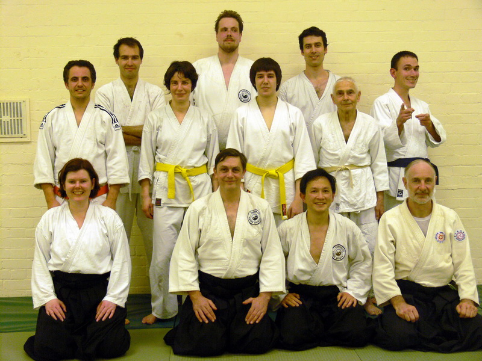

A Visitor From Malaysia
Sensei John Jenkin conducted an orderly class and I could immediately see that his students had a lot of respect for him. As a first time visitor, everyone treated me in a very friendly way, including Sensei. It was heart warming. I could have done with a longer warm up before practice as I had not practiced in winter for 35 years. The Dojo was heated but my body needed to be red hot to melt the ice I felt inside! I am not acclimatized to the English winter after decades of living in the tropics.
To return to the warm up, be warned: If Sue Cooper is conducting the warm up, the abdominal and pectoral crunching will seem endless!
Sensei demonstrated and explained techniques thoroughly. Sensei said, and repeated with each technique demonstrated, that the execution must be applied gently - that it was not necessary to use force. What was funny was that Sensei's Ukes, especially Gary, obviously did not think it was applied gently, as it was so effective!
The class was concluded with 'jiyu waza', again in an orderly manner with the chain rotation of partners. I wish 'jiyu waza' could be conducted in this way at my dojo, because fellow aikidokas would then be forced to practice with me! [You see, Malaysians are generally Gary's size, and they don't want to do free practice with a bigger guy like me]. In your Dojo, I found myself experiencing what others in my Dojo feel like - when they practice with a bigger partner. In your Dojo, I experienced practicing with bigger guys than myself, especially when it came to Rob Wrate! I enjoyed my 'jiyu waza' with Rob.
So thanks to Sensei John Jenkin, and all the students there on that cold Monday [14th of December 09], especially Gary who took such wonderful care of me.
My next visit to England will be in the second week of September. I hope I will be able to visit your Dojo again, in warmer weather!
Michael Panter-Brick
Yondan - Malaysian Aikido Association